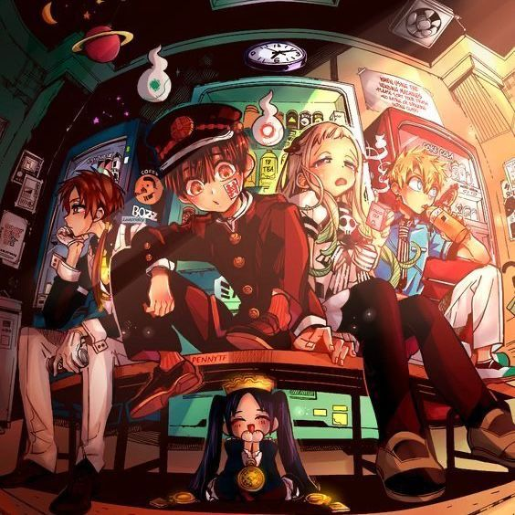
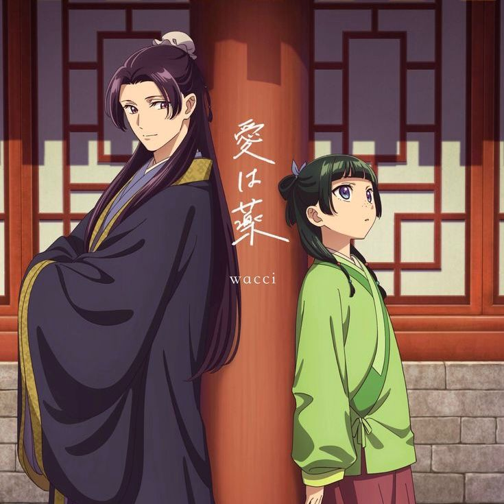
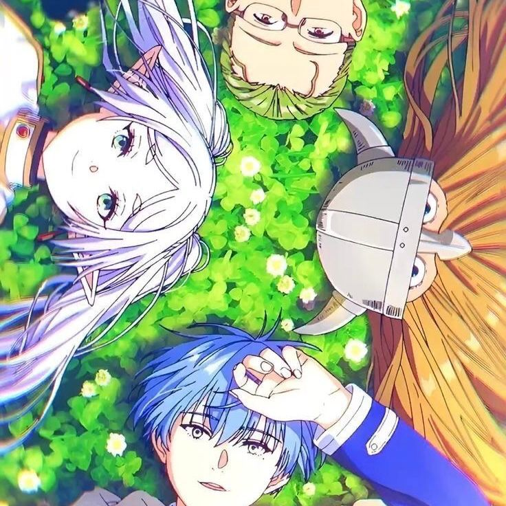
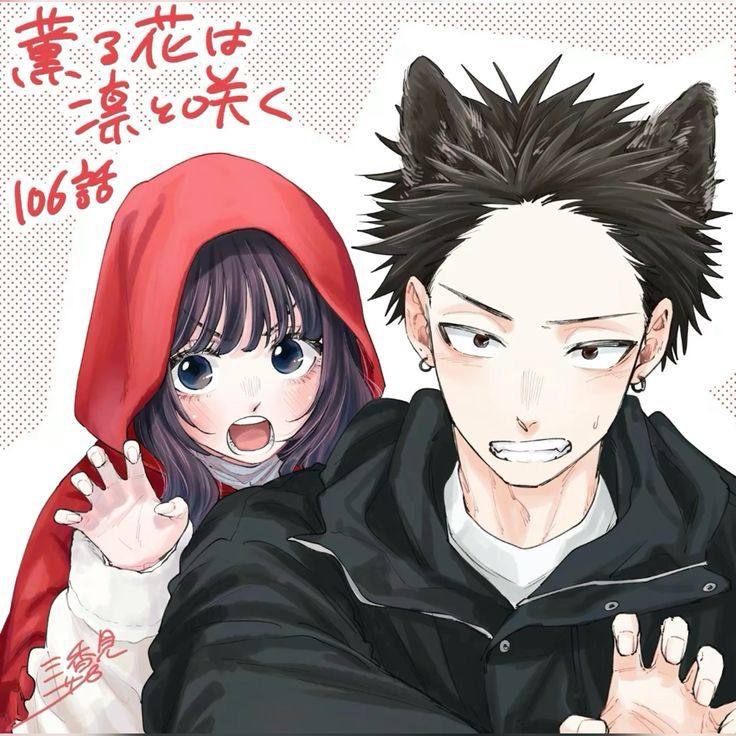
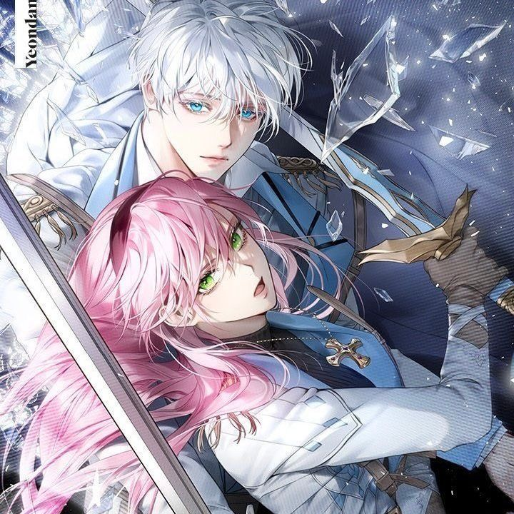
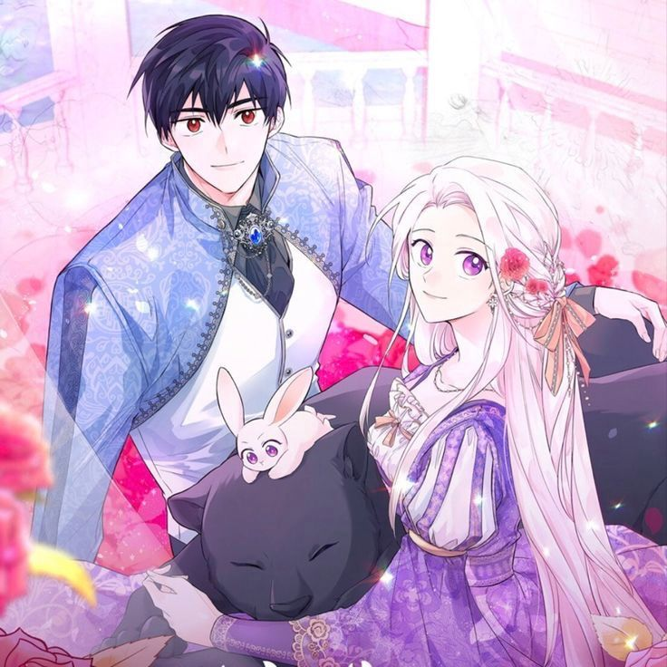

|  | Jibaku Shounen Hanako-kun musim kedua akan rilis di Januari 2025. |
|  | Kusuriya No Hitorigoto musim kedua akan rilis di tahun 2025. |
|  | Frieren Beyond Journey's End umumkan akan merilis musim dua. |
|  | Kaoru Hana Wa Rin akan dianimasikan dan musim pertama tayang tahun 2025. |
|  | The Perks Of Being An S-Class Heroine manhwa akan hiatus selama dua minggu dan kembali di akhir bulan oktober. |
|  | The Symbiotic Relationship Between A Rabbit And A Black Panther resmi tamat dan dilanjutkan dengan side story. |